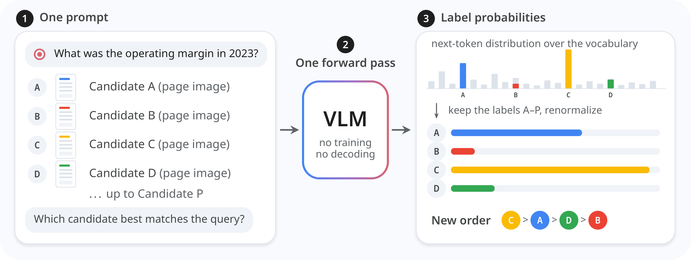
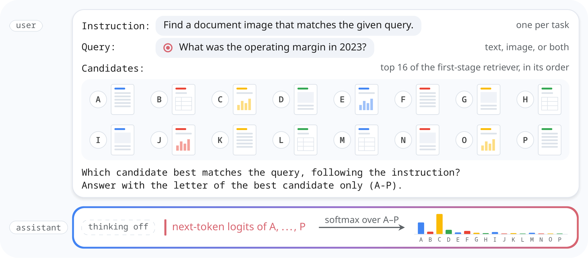

The position
A general vision-language model can serve as a multimodal reranker through System One decisions, and decision tuning can improve its reranking.
Multimodal rerankers are usually dedicated models, trained on retrieval data to score the candidates of a query. Reranking is also a decision of the kind System One models make: the state holds the query and its candidates, the question asks which candidate best matches the query, and the options are the candidates.
Why the position matters
For deployment
Retrieval-augmented systems often already serve a large VLM to generate answers. If that model can rerank through one decision over the candidates, the system needs no separate reranker to train, serve and keep up to date.
For research
If reranking is one decision among many, it can improve with decision tuning across tasks, without reranking-specific training.
Abstract
Multimodal rerankers are usually dedicated models: a vision-language model (VLM) is trained on retrieval data to score the candidates of a query. Scoring options is not specific to reranking. System One decision models such as Jev map a state and a typed question to one probability per option without generating text, and general models can make such decisions with little or no training. Reranking is one such decision, with the query and its candidates as the state and the candidates as the options. We therefore argue that a general VLM can serve as a multimodal reranker through System One decisions, and that decision tuning can improve its reranking. We ask a VLM one choice question over the top 16 candidates of a first-stage retriever and rank the candidates by the probabilities of their labels, read from one forward pass. On MMEB-V2 image retrieval, this choice scores 5.4 to 7.3 hit@1 above a yes/no question per candidate, and the yes/no question falls below the first stage. With the choice, zero-shot Qwen3.8-27B beats the supervised Qwen3-VL-Reranker-2B on all three benchmarks and comes within 1.6 points of Reranker-8B on each. It matches Reranker-8B on MMEB-V2 visual documents (84.79 vs. 84.78 nDCG@5), at 1.1 to 1.5 times its latency. JEV-27B-VL, the same backbone tuned on text decisions only, improves page reranking by 0.6 to 1.1 points, with gains on most tasks (sign test, p ≤ 0.017), and leaves natural images unchanged. The zero-shot model is larger than the supervised rerankers and of a newer generation, so these comparisons are confounded; we discuss this and other alternative views, and the experiments that would test the position.
Reranking as one decision

The choice readout. (1) The query and the top-K candidates of a first-stage retriever go into one prompt under the labels A–P. (2) One forward pass of a vision-language model, with no decoding. (3) The next-token distribution, restricted to the label tokens and renormalized, gives one probability per candidate, and the candidates are reordered by it. Bar lengths are illustrative.
A reranking decision as a Jev request
Both readouts use the same instruction, query and candidates. The choice readout asks one question over all candidates; the yes/no readout, the form of supervised pointwise rerankers, asks one question per candidate.
| Choice readout (listwise) | Yes/no readout (pointwise) | |
|---|---|---|
| question type | choice | noul |
| state | instruction, query, and the K candidates under the labels A, B, … | instruction, query, and one candidate |
| question | “Which candidate best matches the query, following the instruction?” | “Does this candidate match the query, following the instruction?” |
| options | the K candidate labels | none (a yes/no question) |
| output | one probability per candidate, summing to one | P(yes) for the candidate |
| requests per query | 1 | K |

The prompt, simplified. The instruction, the query and the 16 first-stage candidates, each after its label, form one user turn. The assistant turn opens with thinking off, and the next-token logits at that position, restricted to the labels A–P and renormalized, give one probability per candidate. Thumbnails and bar heights are illustrative.
Setup
We rerank the top 16 candidates of Qwen3-VL-Embedding-2B on MMEB-V2 image retrieval (12 tasks, hit@1) and visual-document retrieval (24 tasks, nDCG@5), and on ViDoRe V3 (8 datasets, six languages pooled, nDCG@10). Every reranker receives the same candidates and the same images, at most 1800 visual tokens each.
The controlled pair is Qwen3.8-27B as released (no decision tuning) and JEV-27B-VL, the same backbone with a LoRA adapter and a decision head trained by its developers on text decisions only (text decision tuning). The dedicated references are the supervised Qwen3-VL-Reranker-2B and -8B.
Preliminary: choice vs. yes/no
| hit@1 | choice1 prompt | yes/no16 prompts |
|---|---|---|
| none (first stage) | 74.85 | |
| Qwen3.8-27Bno decision tuning | 76.76 | 69.50 |
| JEV-27B-VLtext decision tuning | 76.80 | 71.42 |
MMEB-V2 image retrieval (12 tasks, hit@1, top 16 of Qwen3-VL-Embedding-2B). The choice is higher on all 12 tasks for both models; the yes/no readout falls below the first stage on 11 tasks for Qwen3.8-27B and on 9 for JEV-27B-VL.
Preliminary. Of the two System One question types, one choice over all candidates improves the first-stage ranking on image retrieval, and a yes/no question for each candidate, the form of supervised pointwise rerankers, makes it worse.
Finding 1: as a System One decision, a general VLM competes with dedicated rerankers
| Reranker | MMEB-V2 imagehit@1 | MMEB-V2 visdocnDCG@5 | ViDoRe V3nDCG@10 |
|---|---|---|---|
| none (first stage) | 74.85 | 79.20 | 53.01 |
| Dedicated, supervised | |||
| Qwen3-VL-Reranker-2B | 74.49 | 82.72 | 59.18 |
| Qwen3-VL-Reranker-8B | 78.36 | 84.78 | 61.98 |
| General VLM, one choice question | |||
| Qwen3.8-27B (no decision tuning) | 76.76 | 84.79 | 60.94 |
| JEV-27B-VL (text decision tuning) | 76.80 | 85.42 | 62.03 |
MMEB-V2: mean over tasks; ViDoRe V3: mean over datasets, all languages. Bold: best reranker in the column; underlined: second best. Zero-shot, Qwen3.8-27B comes within 1.6 points of Reranker-8B on each benchmark and matches it on MMEB-V2 visual documents (84.79 vs. 84.78).
Finding 1. Reranking through one System One decision, with no training for reranking, a general VLM beats the smaller dedicated reranker on every benchmark and matches the larger one on MMEB-V2 visual documents.
Finding 2: text decision tuning improves reranking of pages
| Benchmark | Qwen3.8-27Bno decision tuning | JEV-27B-VLtext decision tuning | difference | JEV-27B-VL higher |
|---|---|---|---|---|
| MMEB-V2 image, hit@1 | 76.76 | 76.80 | +0.04 | 4 of 12 tasks |
| MMEB-V2 visdoc, nDCG@5 | 84.79 | 85.42 | +0.63 | 17 of 24 tasks (2 ties) |
| ViDoRe V3, nDCG@10 | 60.94 | 62.03 | +1.09 | 8 of 8 datasets |
Both models use the choice readout and share every weight except the adapter and the decision head. A two-sided sign test over tasks gives p = 0.017 (visdoc) and p = 0.008 (ViDoRe V3).
Finding 2. Decision tuning on text alone slightly improves the VLM's reranking of document pages and leaves natural images unchanged.
Where it helps, and at what scale
Over the 12 image tasks, the choice readout on Qwen3.8-27B gains on all nine tasks whose query contains text, most on CIRR (+7.1 hit@1), whose queries combine an image with a modification text. It loses on the three tasks whose query is an image alone: MSCOCO image-to-text (−4.1), VisualNews image-to-text (−1.7) and NIGHTS (−0.7).
Replacing the backbone with the five instruction-tuned Gemma 4 models, unchanged and with no training: E2B and E4B lower the first stage on all three benchmarks; from 12B upward the readout improves visual-document retrieval, by 1.7 to 2.9 nDCG@5 and 2.4 to 3.4 nDCG@10; on natural images only 31B improves the first stage (+2.6 hit@1).
Gain over the first stage, in points of each benchmark's metric. Lines: the choice readout on the five Gemma 4 models, at their total parameters. Hollow markers: the rerankers of the main setup at their nominal size, coloured by benchmark; JEV-27B-VL is drawn slightly to the right of Qwen3.8-27B. Gemma 4 keeps its processor's default of 280 visual tokens per image, against up to 1800 for the other models, so the comparison across families changes the image budget along with the backbone.
Efficiency
Latency per query on one H200 at concurrency 1, for the same top-16 ViDoRe V3 pages (100 English queries), preprocessing included. One choice pass takes 1.1 times as long as Reranker-8B with its released code and 1.5 times as long with batched scoring; all three read about 29k input tokens per query. JEV-27B-VL takes 4.48 s. A Gemma 4 model takes 0.47 to 1.27 s at about 4.4k input tokens.
Alternative views
Stronger VLMs make stronger dedicated rerankers too
Our comparison changes supervision together with scale and model generation. It shows that a zero-shot VLM can match a dedicated 8B reranker on MMEB-V2 visual documents today, and leaves open whether it would match a dedicated reranker trained from the same backbone.
A general VLM is too expensive
Qwen3.8-27B has more than three times the parameters of Reranker-8B and takes 1.1 to 1.5 times as long per query. A system that already serves a VLM could rerank with the same model.
Small models cannot do it
Gemma 4 E2B and E4B lower the first stage where Reranker-2B improves it, so Finding 1 holds only for sufficiently large models.
Dedicated listwise rerankers already exist
ZipRerank trains for reranking with the readout we use. Our position is that decision tuning can also produce a good reranker, and the two routes can coexist.
The readout has practical limits
One prompt holds at most 16 candidates under the labels A–P, and listwise readouts depend on option order and prefer some labels whatever the input. We present the candidates in first-stage order only.
Testing the position
Multimodal decision tuning
Tune a VLM on decisions of many kinds that include visual options. The position is refuted if this tuning does not improve its reranking, in particular on natural images and on queries that are an image alone.
The gap on one backbone
On one VLM at several sizes, compare the zero-shot choice, the same model after multimodal decision tuning, and a dedicated reranker trained from it.
Backbone and image budget
Run Qwen3.8-27B at the image budget of Gemma 4, or Gemma 4 at a larger one, to tell whether the gap between the two families comes from the backbone or from the image budget.
The choice readout
Measure how the choice probabilities change with the order of the candidates and how well they are calibrated, and correct for order, for example by averaging over cyclic rotations.
BibTeX
@misc{liu2026multimodalrerankingdecision,
title = {Multimodal Reranking Is a System One Decision},
author = {Zhuchenyang Liu and Yao Zhang and Yu Xiao},
year = {2026},
eprint = {2610.28435},
archivePrefix = {arXiv},
primaryClass = {cs.IR},
url = {https://arxiv.org/abs/2610.28435}
}